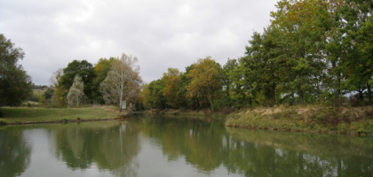
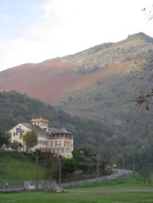

EUROPE 08

Learnings So Far
Friday, 17 October 2008

After a couple of days on the bread and water waiting for Felicity to be able to stomach some food following her offal debacle we’re back on track for our gastronomic tour of this fine country.
During the drive south east from Bayonne to Narbonne we’ve discovered a couple of interesting facts:
-
1.Lourdes is a massive tourist trap and easily avoidable in any trip to France
-
2.No matter where you eat - whether a truck stop or a top of the line restaurant - the French take immense pride in their food preparation (thanks Rick Stein for the tip).
-
3.Drive into a roundabout with your eyes closed and your foot flat on the accelerator!
-
4.Did we say to avoid Lourdes??? God knows why Madonna named her first born after such a place. Maybe she wanted to be reminded of crazy pilgrims clambering over fake statues of the Virgin Mary!
Hitting the Mediterranean in good time gives us the flexibility to enjoy a little of what the region has to offer - the scenery, the sand, the food and the wine. We’ve got another 10 days with the car before we train to Paris and spend some time in the big smoke.
Now enough writing and back to the pain au chocolat!!
The tranquil waters of the Canal du Midi and the high arches of the Pyrenees - some of the many sites seen from our drive down south!
